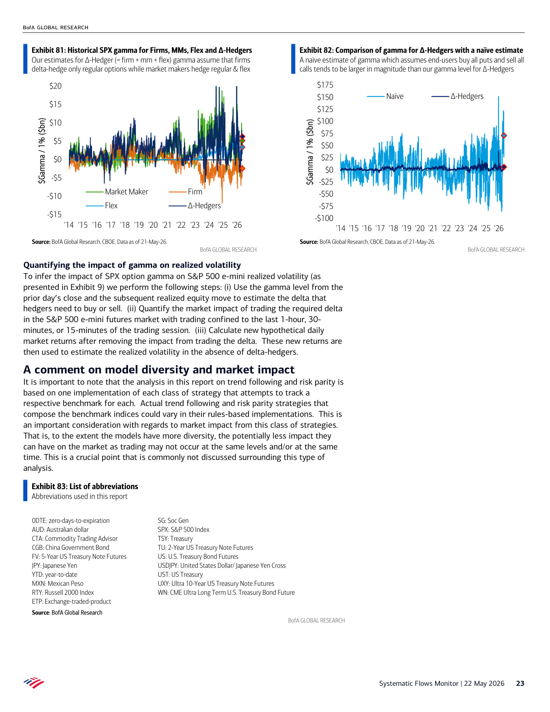
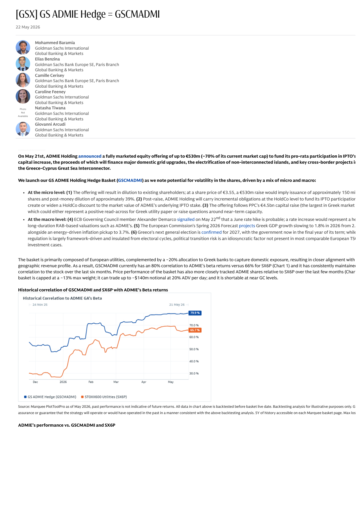
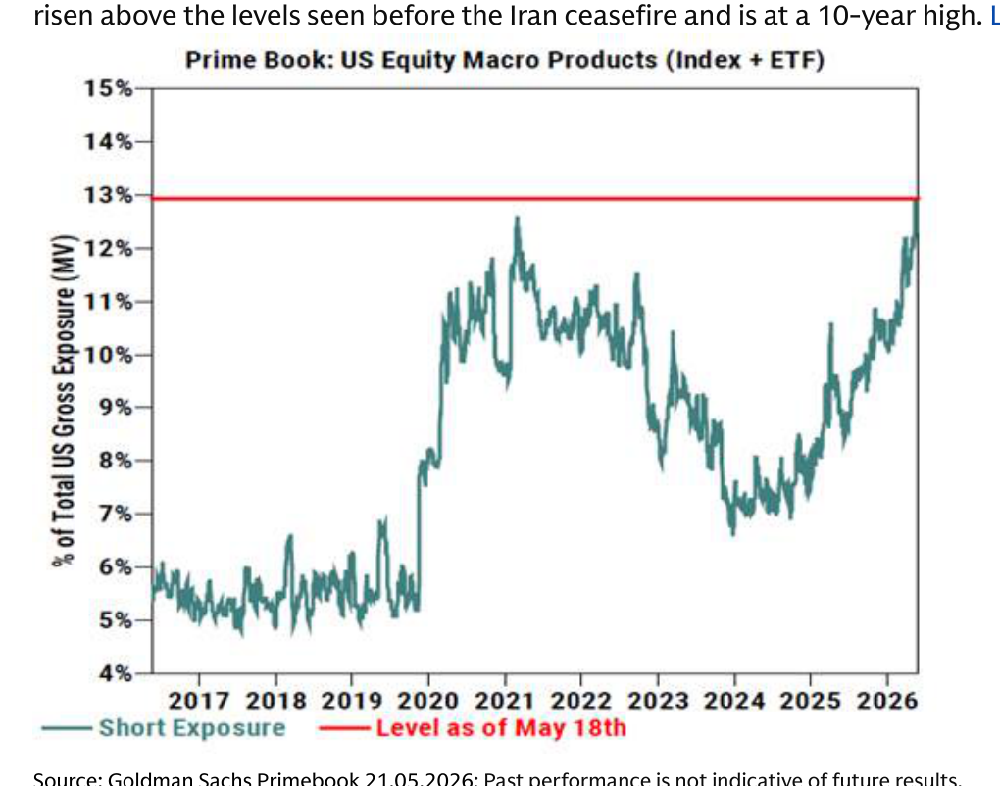
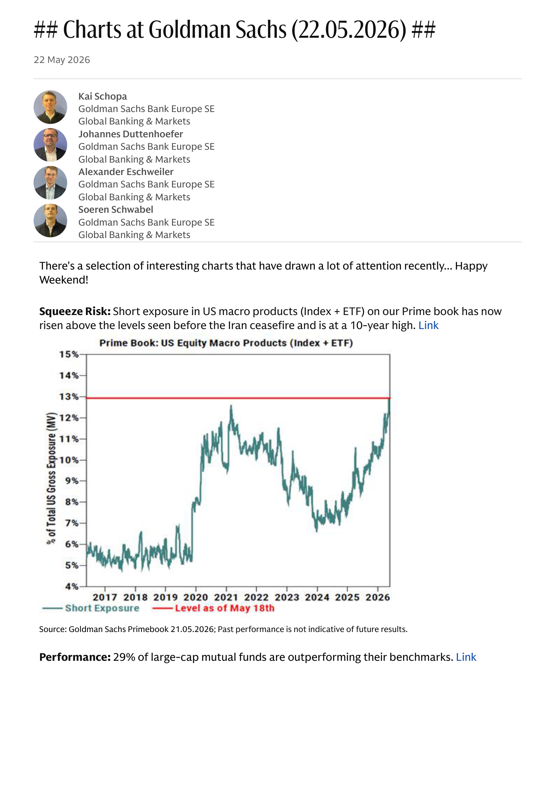
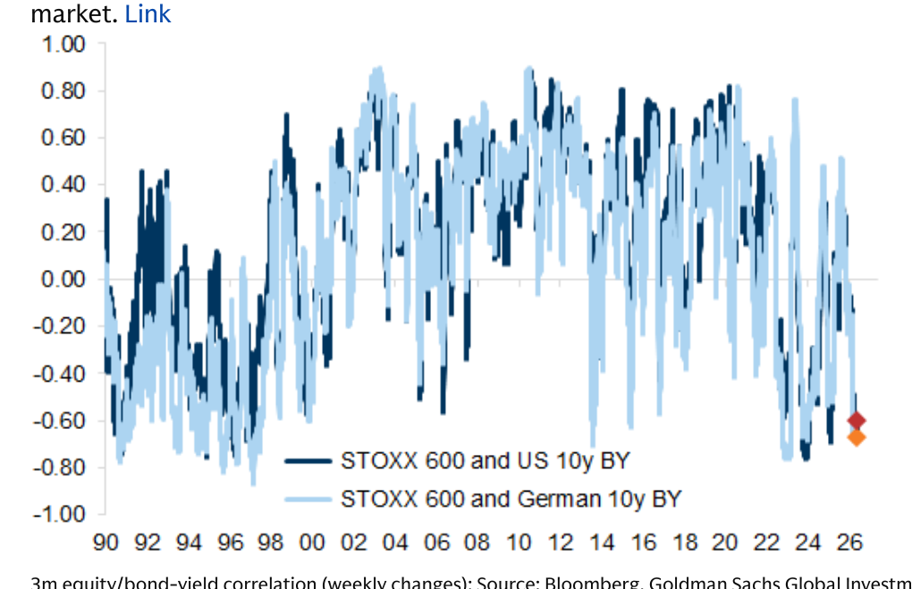
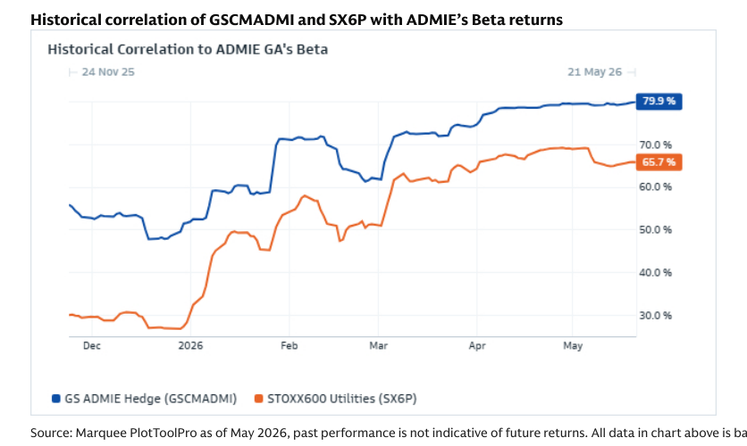
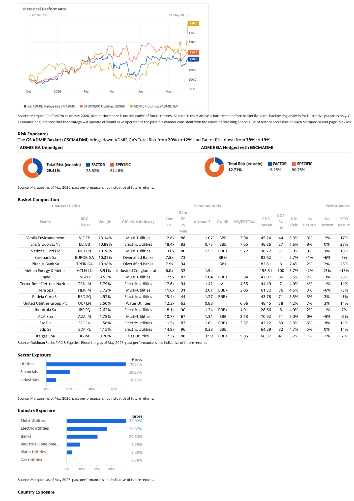
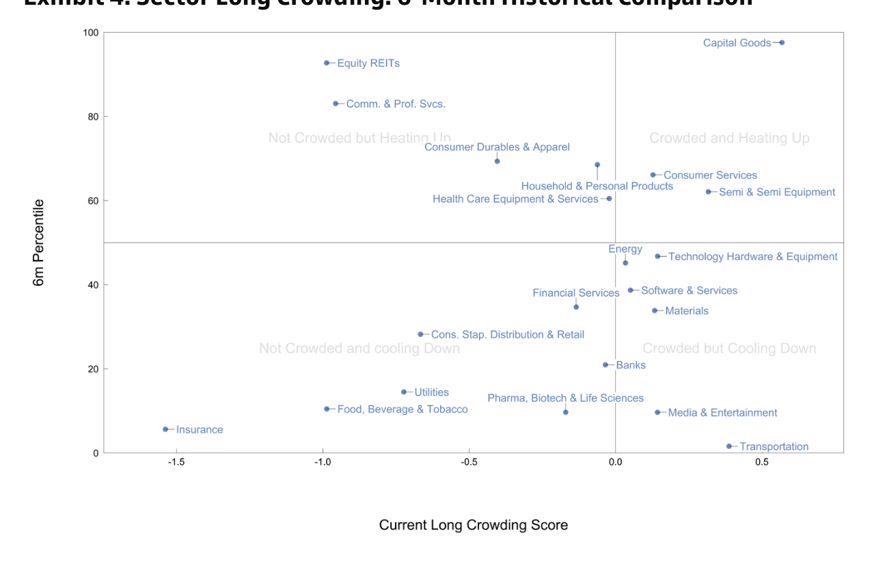
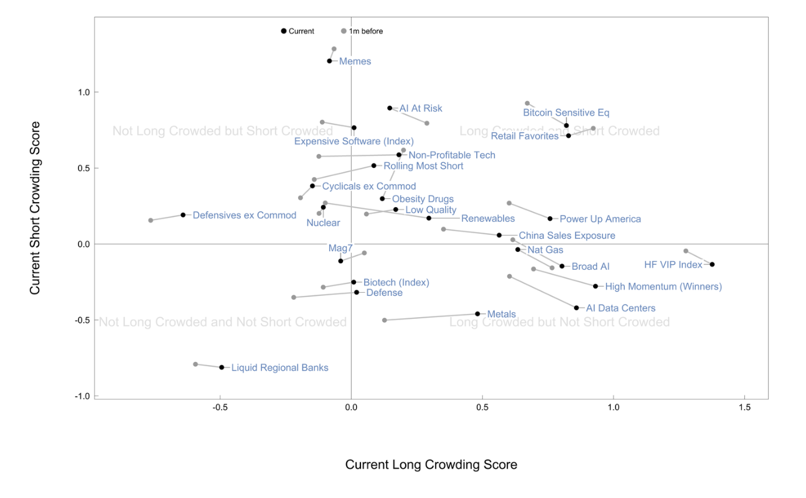
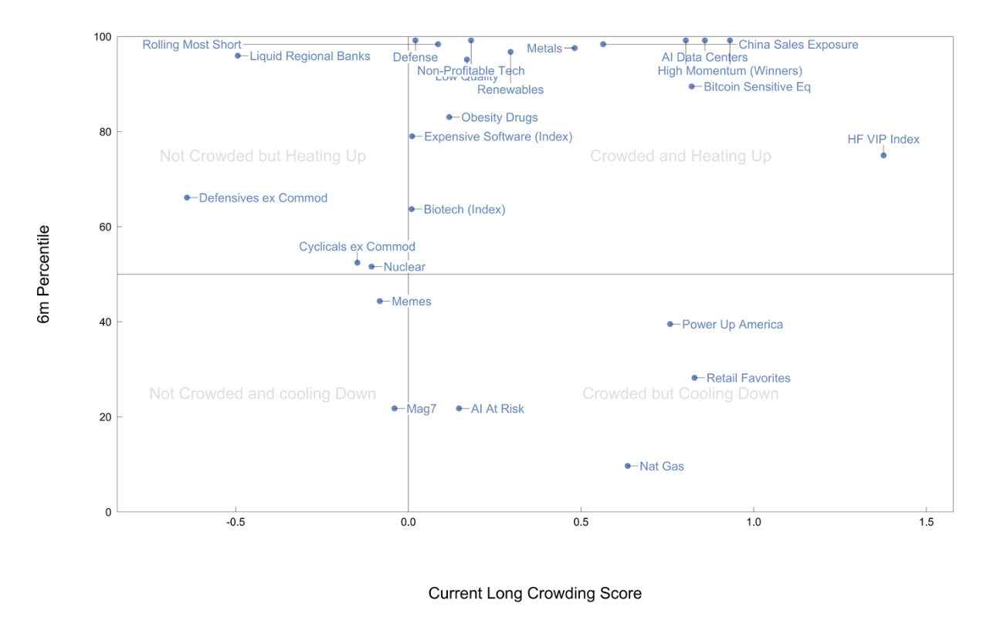

What it says: BofA Systematic Flows Monitor Systematic flows remain stable led: Systematic Flows Monitor | 22 May 2026 23 Exhibit 81: Historical SPX gamma for Firms, MMs, Flex and ∆-Hedgers Our estimates for ∆-Hedger (= firm + mm + flex) gamma assume that firms delta-hedge only regular options while market makers hedge regular & flex S...
Worldview update: The rally has become more flow-mechanical. Fundamentals still matter, but call demand, vol compression, and dealer positioning are first-order timing variables.
Portfolio/use: Favor defined-risk upside and start adding downside while hedges are ignored.

2. GSX GS ADMIE Hedge GSCMADMI: Europe has opportunity, but oil and FX can spoil it
Page 1 | GSX GS ADMIE Hedge GSCMADMI
What it says: GSX GS ADMIE Hedge GSCMADMI: [GSX] GS ADMIE Hedge = GSCMADMI 22 May 2026 Mohammed Baramia Goldman Sachs International Global Banking & Markets Elias Benzina Goldman Sachs Bank Europe SE, Paris Branch Global Banking & Markets Camille Cerisey Goldman Sachs Bank Europe SE, Paris Branch Gl...
Worldview update: Europe has an earnings and under-positioning setup, but it is also more exposed to energy disappointment and currency pressure.
Portfolio/use: Prefer European longs with earnings momentum and lower energy sensitivity; hedge EUR risk when oil stress rises.

Daily Shot
Daily Shot was unavailable for this run.
Additional Chart Selection
Charts at Goldman Sachs 22.05.2026
3 additional extracted charts
Chart 1
Page 1 | image-block | score 0.543

Chart 2
Page 1 | vector-cluster | score 0.520

Chart 3
Page 5 | image-block | score 0.507

GSX GS ADMIE Hedge GSCMADMI
2 additional extracted charts
Chart 1
Page 1 | image-block | score 0.637

Chart 2
Page 2 | vector-cluster | score 0.820

Hedge Funds Crowding Monitor US
3 additional extracted charts
Chart 1
Page 3 | image-block | score 0.728

Chart 2
Page 3 | image-block | score 0.728

Chart 3
Page 4 | image-block | score 0.727

BofA Systematic Flows Monitor Systematic flows remain stable led